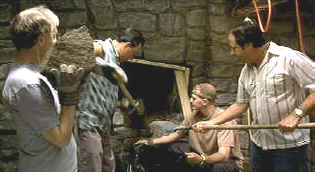

| Small Time
Crooks/B,B |
| Dreamworks/2000/95/ANA
1.85 |
Small time pleasures are like delicious cookies: they bring a smile to your
face but they don't raise your level of culinary consciousness. Small Time Crooks, pretty
much a throw-back to early Woody Allen, is a simple idea embellished with the same intensity that
superstar cookie baker Frenchy piles on the decor.
 |
| The gang that couldn't dig straight? ©Dreamworks |
Ray is a down and out loser looking for a big score. An abandoned pizza
parlor supplies inspiration for Ray's scheme to rob a bank. Never mind that Ray has already
spent time in the jug for bungling a bank job. Ray's sarcastic muse is Frenchy. She has a pithy
observation about every lamebrain Ray move or observation. Their bickering is reminiscent of Jackie
Gleason's The Honeymooners. Ray convinces Frenchy that this is her last chance to rise
above a life buried in cuticle clipping.
Ray's gang of losers ensures that everything will go wrong. But Frenchy's cookie
creations turn out more than just a front for a tunnel disaster. Allen picks the last chocolate
chip out of the material, finding fault with everybody that comes into the frame of Small Time
Crooks.
Tracey Ullman is sheer delight as Frenchy. Her way with a word is blue collar
magic, her appetites for sophistication a marvelous display of comic joy. Allen's carping banter is
entertaining. His got this loser down pat. Hugh Grant adds a rich vein of smarmy erudition. The
rest of the crew includes an inspired ditzy May played by Elaine May, Michael Rappaport sporting an
idiotic grin with blissful innocence, and Jon Lovitz with fire on his mind.
Take enhancement out of the equation and this is a first rate looking DVD.
However, there's too much extra information because of the enhancement, marring the picture. Too
bad. Color saturation is natural and accurate. There's a nice variety of skin tones on display,
lots of interior design details are enriched by the range of color and the picture packs good
punch. On the sound side, this is another Woody Allen mono recording. The jazzy score works fine in
its simple plain execution. Dialogue is a trifle thin and the entire production would benefit from
a goose in the audio. |
|
|
|

Truman Show/A,A-
Powered by the consummate taste and directing perfection of Peter Weir. Jim Carrey gives a
marvelous performance. Not to be missed!

Selections from the Feature Archive include articles on
Akira Kurosawa, Frank
Darabont, Blonde Bimbos, Hollywood Street Gangs, or Vietnam: The
Hollywood Pariah, and many more....
Sturges Emerges
Preston Sturges was Hollywood's resident comic genius for more than a decade. His movies are
timeless. Click on his image to read all about it.

The
Movie Poster Archive includes extensive poster images from the films of stars like Susan Hayward,
Kirk Douglas, Katharine Hepburn and many more. Our featured star is Humphrey Bogart.

Click on the DVD MIA symbol for
profiles of DVDs missing in action.
Add films to the DVD MIA Master List by filling out
a simple form. Click Here |